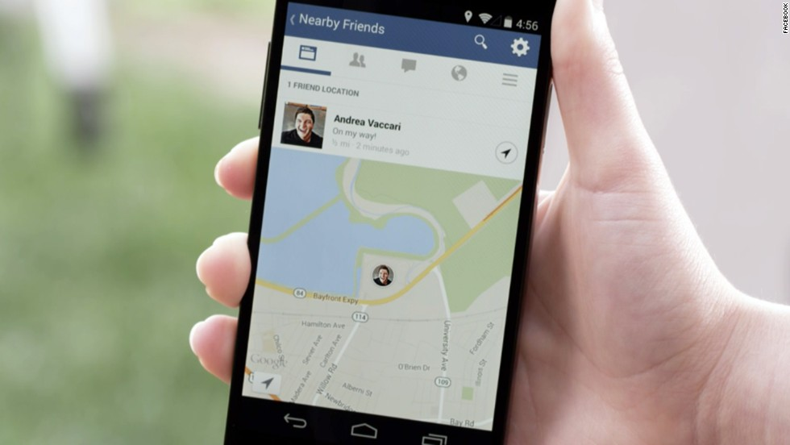

Facebook Launches Friend-Tracking Feature

Just because Facebook has moved on to virtual reality face gear and drones doesn't mean they've forgotten their core competency: stalking. The company just launched an optional "Nearby Friends" feature that will let you "continuously" track friends like they were Jason Bourne
Your phone always knows where you are. And now, if you want, your Facebook friends will always know where you are, too. Facebook is introducing a mobile feature called Nearby Friends that taps into that steady stream of location information so friends can track each other in real time. The idea is to make it easy for people to meet up in real life, so they can have conversations in person instead of comment threads, temporarily replacing Likes and LOLs with eye contact and actual laughter. A live meet-up is also an excellent opportunity to grab a selfie with your pal and upload it to the Facebook owned Instagram. In a refreshing change, the new Nearby Friends feature is not turned on by default.
To prevent stalking, the function comes with a timer that switches off Nearby Friends after a certain time, for instance one hour. And only friends can see you in Nearby Friends — not friends of friends or members of the public you have not confirmed as friends. Nearby Friends also produces an activity log, which you can delete at will. The log also produces maps of your whereabouts over time, which you can also delete if you want.
When turned on, Nearby Friends shows a list of approved Facebook friends who also use the feature and shows their approximate location. A push notification can tell you how many of your friends are nearby. Open the app to see a list of pals, the neighborhood or city where they are, how many miles away that is from your current location, and a time stamp of when they where there. There is an option to share your exact location with specific friends, which can be handy for coordinating large groups at concerts or finding someone in a crowded area. Your friends will see a little image of your face on a map for a set period of time. Nearby Friends will be available on Facebook's iOS and Android apps, but will only work for select locations at first.

Share: